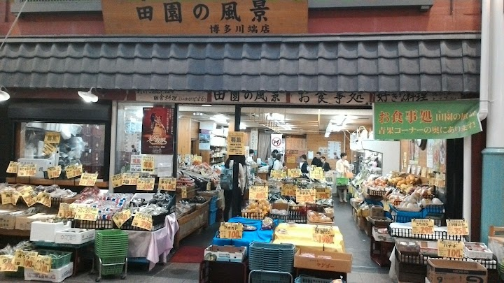
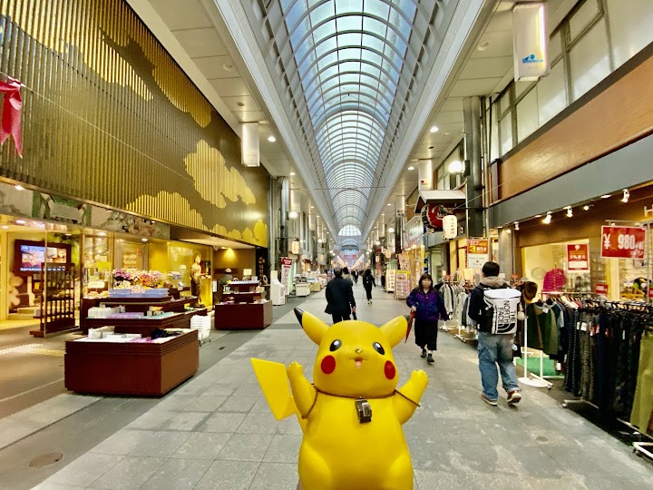
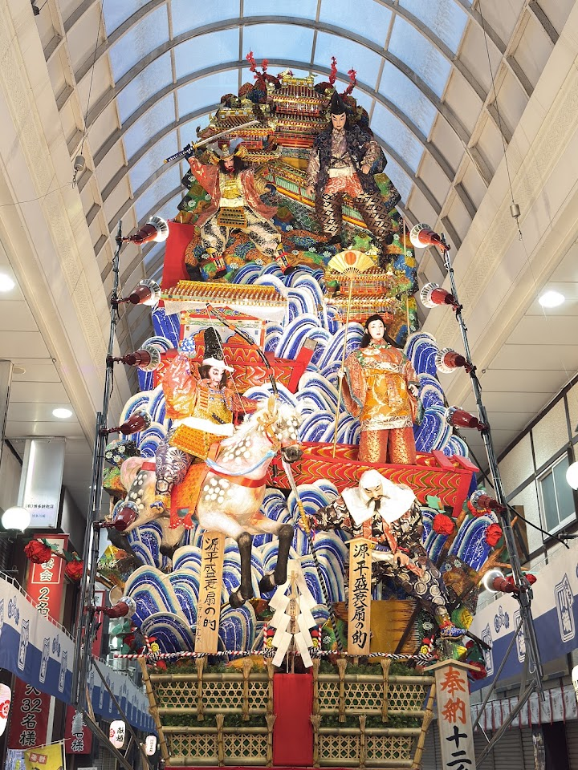
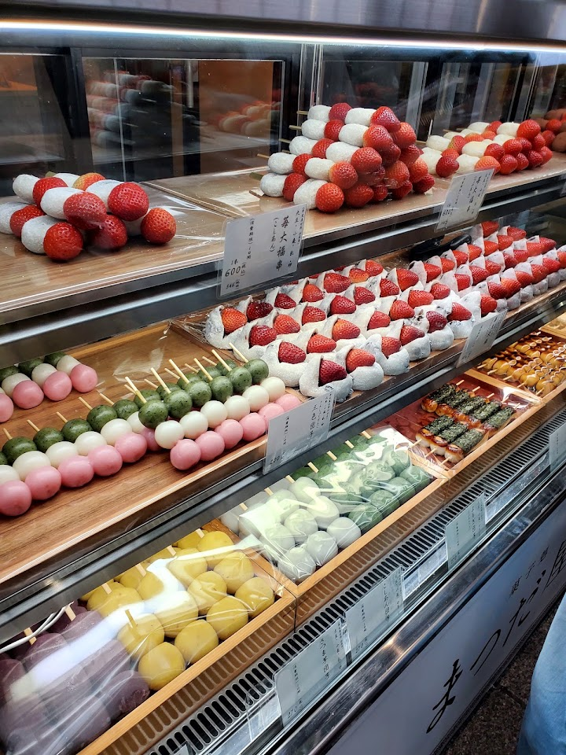
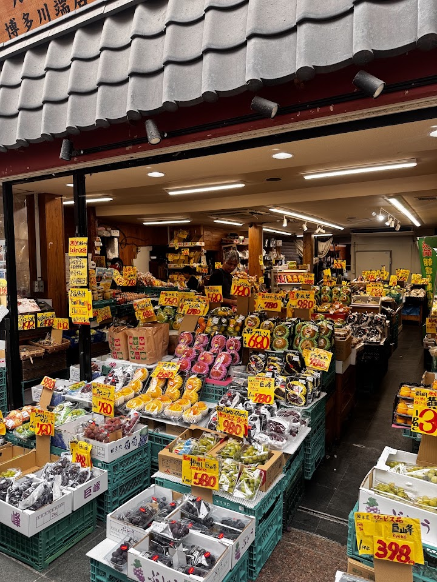
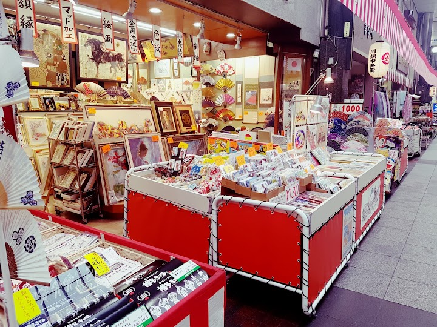

Kawabata Shopping Arcade
Covered shopping artery with ramen joints & shops selling artisan gifts & typical clay Hakata dolls.
Open in Google Maps (street view, more photos and reviews there)






Visitor tips on finding it and getting there
This shopping arcade is filled with all things Japanese - specifically 'Made in Japan' products that are worth having a look. Stores selling homewares, shoes, food and even tailors line up this covered arcade, making browsing a breeze as you stroll from one end to the other. Who knows, you might find your own hidden treasure here if you look hard enough.
Kawabata Shotengai is a shopping street that stretches from Nakasukawabata station to Kushida Shrine station. We started off from Riverain Mall exit and hit the jackpot for their scheduled closing day and went to the ground level. Kawabata Shotengai is Hakata'a oldest shopping street that flourished 130 years ago. It has around 130 shops (coincidence!) lining a 400 metre long arcade. We saw many giftshops, eateries, local specialty shops. If you stay nearby, plan a visit both in daytime and when night falls for a different ambience. Tourists please be mindful of rules like touching actual